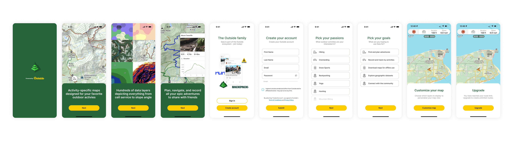
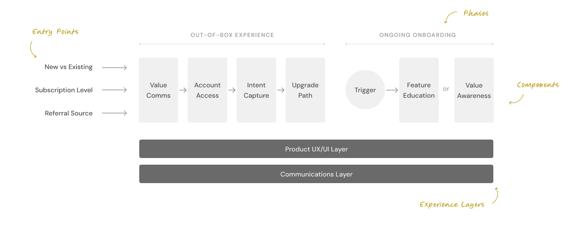
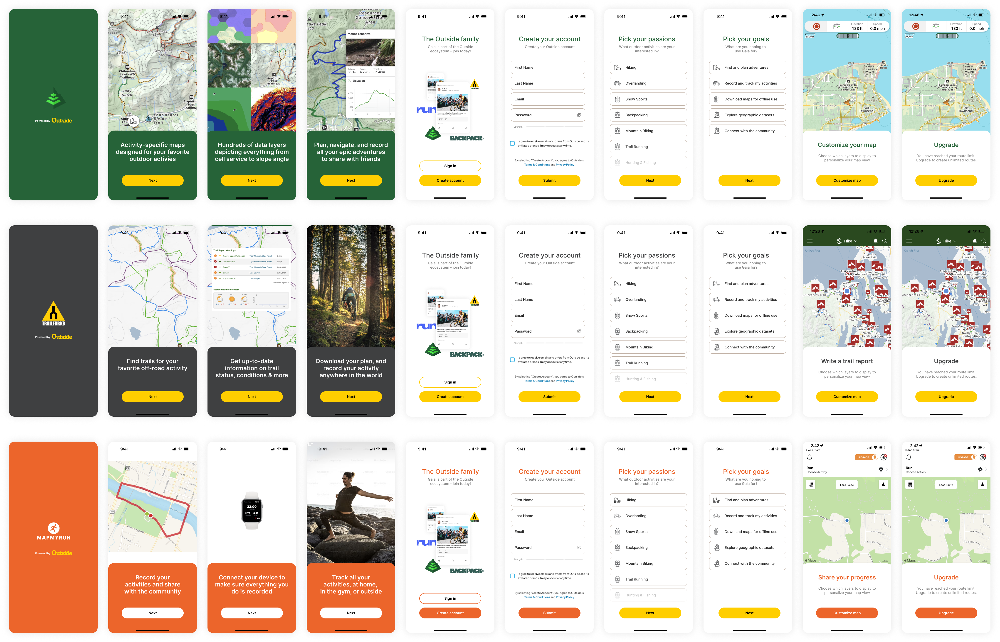

Aligning siloed product teams around a single, cross-platform activation strategy to drive user retention.
Overview
Defining a unified onboarding strategy for Outside's fragmented product portfolio, reframing onboarding from a set of simple introductory screens into a measurable, cross-product value-delivery system.
Context
As the Project and Design Lead working alongside the CDO, I was initially asked simply to "look into onboarding" across our portfolio (which included Gaia GPS, Trailforks, and MapMy). While there was plenty of anecdotal evidence that the first-time user experience was struggling, there was no tangible data to prove it. Furthermore, while our marketing promised a cohesive "Ecosystem," the products themselves operated as entirely disconnected silos.
Opportunity
Design a strategic framework that could:
- Move the organization away from treating onboarding as just "intro screens" and toward a system that actively guides users to product value.
- Establish shared definitions, ownership, and success metrics across a diverse portfolio of apps.
- Align isolated product teams around a single, cohesive north star for the first 30 days of the user journey.
Challenge
I quickly discovered that the real problem wasn't the UI; it was organizational and structural:
- No Ownership: No single team was actually responsible for the user's critical first 30 days.
- Invisible Failure: "Activation" was measured differently by every product lead, meaning systemic failures were easily hidden.
- Brand Resistance: Each product had a strong, fiercely protected individual identity, making the adoption of a universal UI a very tough sell.
Approach
I needed to move the executive conversation from a vague "onboarding needs improving" to something concrete, quantified, and undeniable:
- Constructed "Value Reach Rate" metrics in Amplitude to definitively prove that our current onboarding was failing to direct users to value moments.
- Uncovered stark, alignment-forcing realities: ~50% of new users experienced zero product value, 20% did absolutely nothing during their free trial, and less than 1% adopted more than one Outside product.
- Developed a standardized framework to remove the ambiguity around what onboarding is, allowing teams to improve their individual flows while building cross-product consistency.

Execution
Led the transition from high-level strategy to actionable product architecture:
- Translated the framework into a "Canonical Flow"—a single architectural diagram defining the required onboarding steps for every product in the portfolio.
- Designed and proposed a universal UI to challenge the inertia of siloed brand identities.
- Authored the "North Star" strategic white paper, which became the definitive reference point for VP-level Product and Engineering leadership.
Outcome
While resource constraints limited an immediate, full-stack UI implementation, the strategic impact on the business was massive:
- Unified Metrics: Successfully shifted the organization away from tracking vanity metrics (Account Creates) to tracking true value metrics (Reach Rate) on a shared, cross-product dashboard.
- Unblocked Brand Strategy: Highlighted how the "House of Brands" confusion was actively hurting retention, which directly influenced the executive decision to consolidate subscription tiers.
- Exposed Systemic Flaws: Uncovered and addressed much deeper organizational issues around product ownership and multi-product packaging, providing a clear foundation for future product growth.


